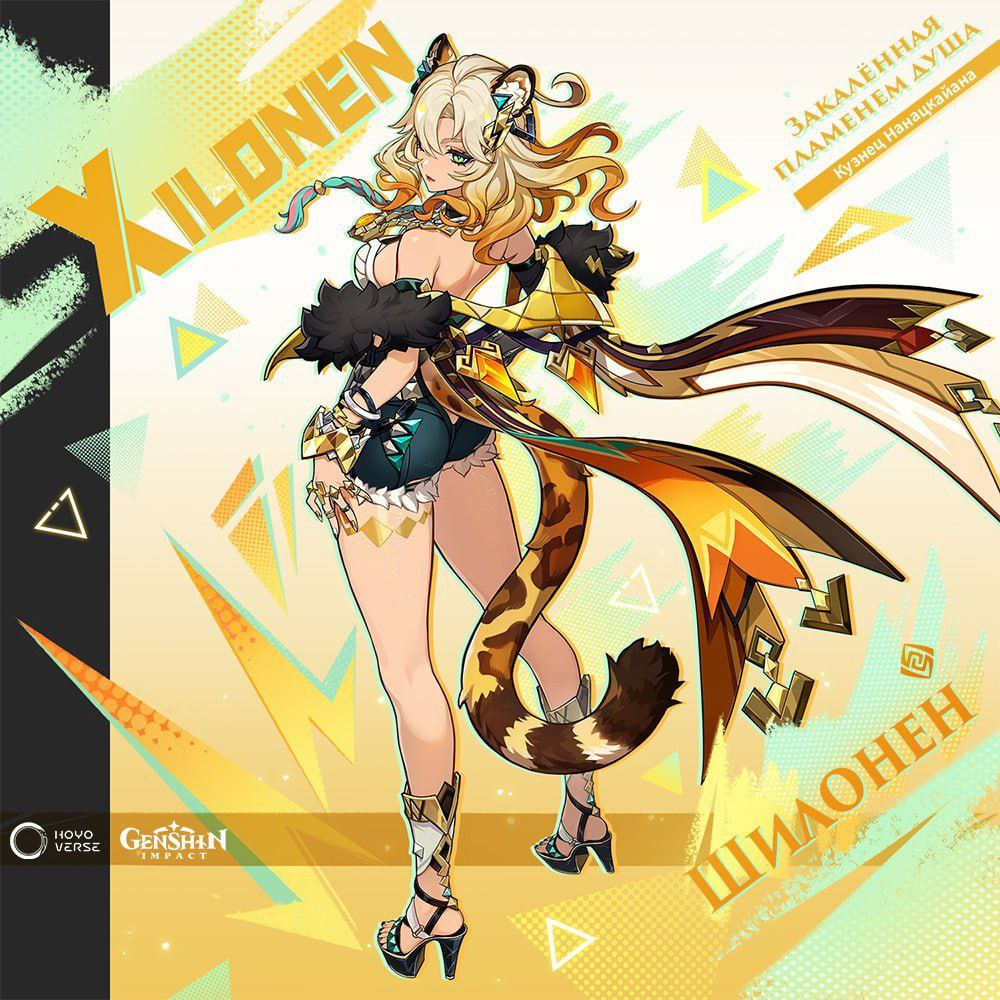

Цікаве про Снігову На даний момент більшість концепт-артів персонажів, босів та локацій Сніжної вже завершено. Читати далі

НОВИЙ ПЕСРОНАЖ Шилонен давно славиться у Натлані як майстер ковальської справи.
Люди захоплюються її роботою і приїжджають до Шилонен з усіх куточків країни. Одні справді замовляють у неї зброю, тоді як іншим просто хочеться подивитися на знамениту майстриню, щоб потім було про що поговорити.
Читати далі
НОВЕ ОНОВЛЕННЯ ГРИ У Genshin Impact Алхімічний прорив є головною подією оновлення 4.5, де вам належить зайнятися вирощуванням інгредієнтів, готуванням та продажем зелий для збільшення виручки магазину. Ви зможете зіграти у кілька міні-ігор та заробити кошти, необхідні для розширення масштабів діяльності торгової крамниці.
Читати далі
У Genshin Impact запустили івент з примогемами та розіграшем івентових круток Святкування четвертої річниці гри у самому розпалі. На додаток до вже виданих подарунків на ігрову пошту та події форуму з головним призом у вигляді підписки на Благословення порожнього місяця розробники Genshin Impact запустили новий веб-івент, у якому можуть взяти участь усі бажаючі, щоб забрати подарунок у вигляді каменів витоку та приєднатися до розіграшу 10 Переплітаються доль.
Читати далі